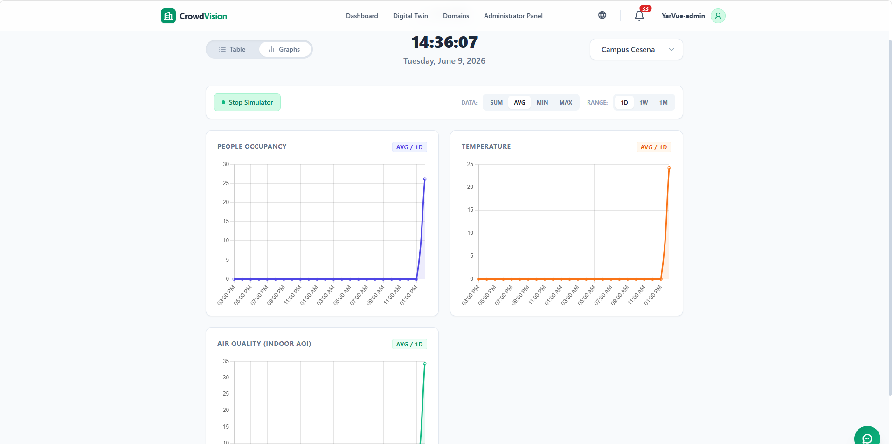
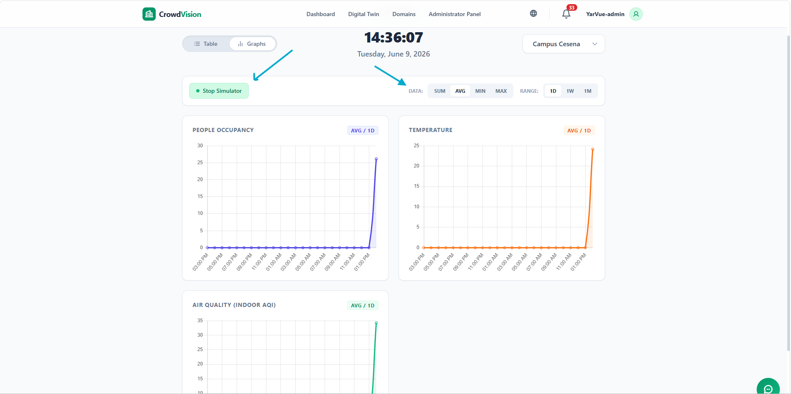

/
User Guide
Switching the dashboard from List to Graph opens the visual analytics view: charts of historical trends, plus the built-in simulator for generating test data.

Figure 1 — The Graph view tracks occupancy and temperature over time for the selected building.
Two charts summarise the building:
Both aggregate readings from across the building and refresh automatically for the selected time range.
When the aggregation mode is Sum, only the Occupancy chart is shown (and widened), because summing temperatures across rooms is not meaningful.
The Range buttons control how far back the charts look.
| Range | Shows |
|---|---|
| 1D | The last 24 hours, hour by hour. |
| 1W | The last 7 days, day by day. |
| 1M | The last 30 days, day by day. |
Time slots with no data appear as zero.
A building has many rooms, so each time slot combines them into one value. The Data buttons choose how.
| Mode | Meaning |
|---|---|
| avg | Average across all rooms — the typical state of the building. |
| sum | Total across all rooms — best for total people in the building. |
| min | Lowest reading in the slot — spots unusually cold rooms. |
| max | Highest reading in the slot — best for finding the hottest room. |
CrowdVision includes a simulator that generates synthetic readings — useful for demos, testing, and trying overcrowding scenarios without physical sensors.
The simulator runs independently from the app. An administrator or developer must start it and give you its URL before you can use these controls.
http://localhost:3001).1D range with avg mode is the best live view.
Figure 2 — The simulator button (with its gear settings) starts and stops synthetic data for the selected building.
The button reflects the simulator status for the building you are viewing. If you start it for Building A and switch to Building B, the button shows B’s state — A keeps running in the background.
The simulator generates, per room every 10 seconds, a people count of 0–50 and a temperature of 18.0–30.0 C.
As readings arrive — simulated or real — CrowdVision checks each against the room’s thresholds. If a room exceeds its capacity or maximum temperature, the notification bell turns red with a counter, a toast slides in, and (if enabled) a browser push is delivered even when the dashboard is closed. See Notifications.